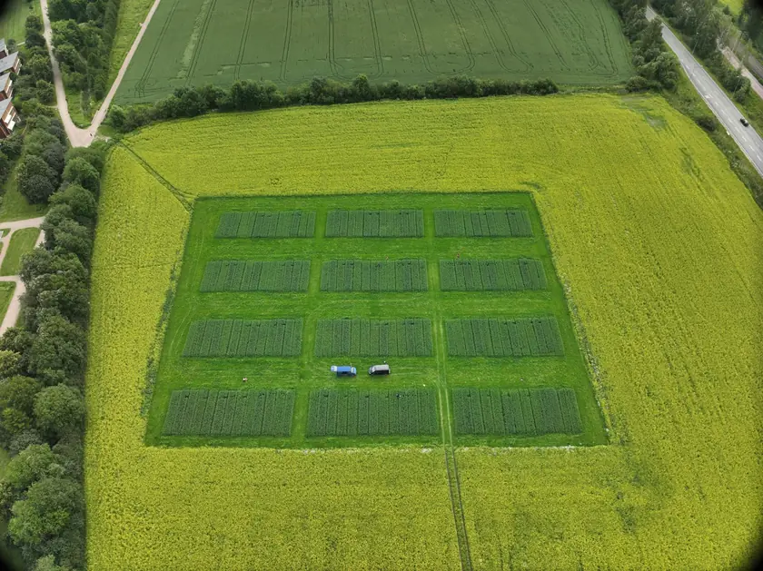
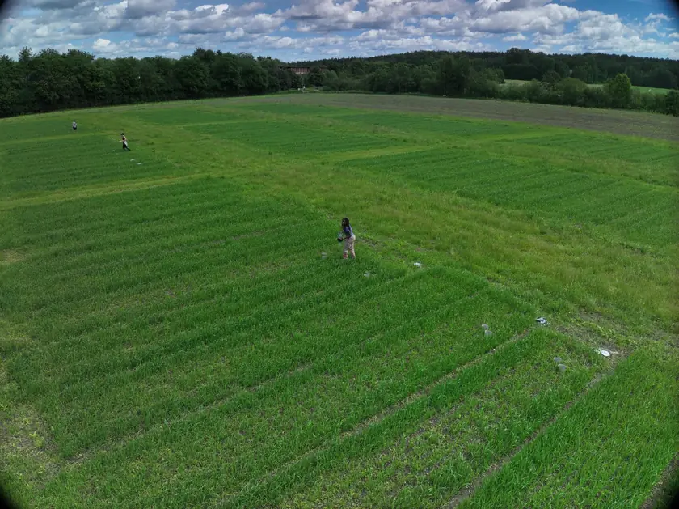
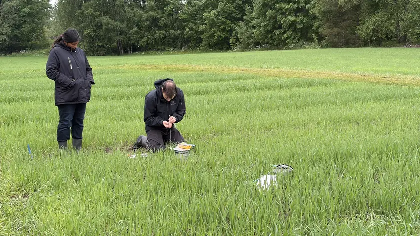
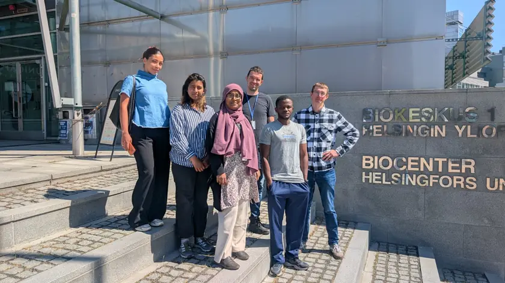
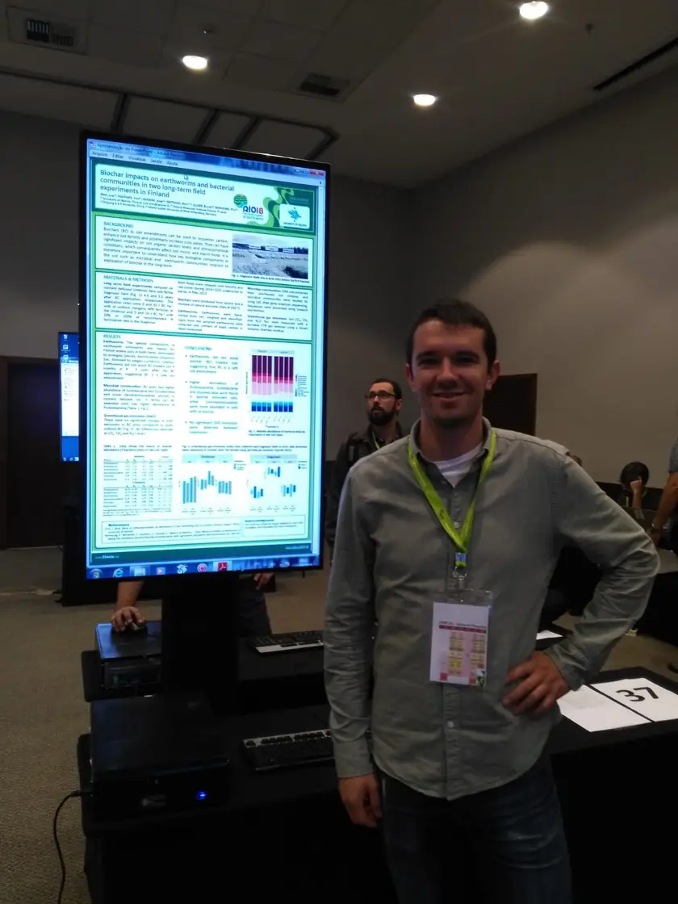
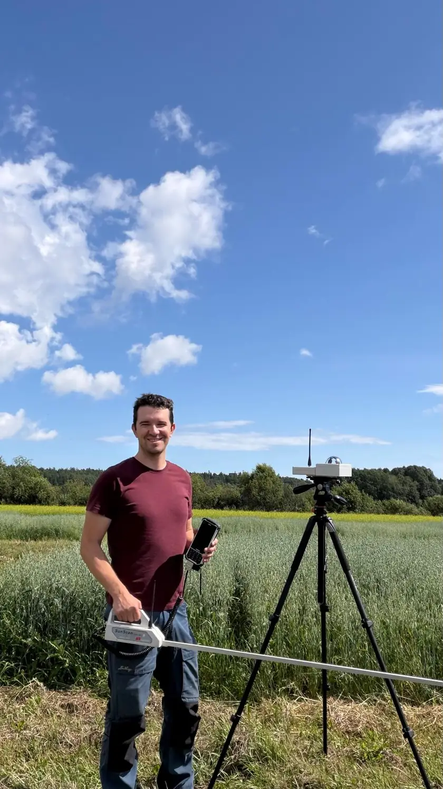

Jure Zrim
Hello! I'm a doctoral student in Agroecology at University of Helsinki. My research focuses on effects of biochar and other soil amendments on soil ecosystems.
My work integrates field and laboratory research to explore sustainable agricultural practices and their role in mitigating climate change.
Current Projects and Networks
NITROSCOPE
NITROSCOPE studies nitrogen losses and sustainable nitrogen management in agriculture. I manage the Umbrisol and Stagnosol field experiments, coordinate static-chamber sampling, gas chromatography, and greenhouse-gas flux calculations, and train student assistants. I also collect soil and crop measurements to help interpret the gas fluxes.
PATH2CC
I contribute to assessing soil carbon storage and the soil health benefits of carbon farming for small farms. My work combines soil sampling, carbon and bulk-density measurements, DNA extraction, and microbial analyses with the development of monitoring and carbon-credit assessment methods. Microbial indicators help evaluate soil health and biodiversity alongside the carbon measurements.
CYANOACTION network
Within COST Action CA23160, I help implement a multilingual LimeSurvey survey on cyanobacterial blooms for stakeholders in water management, agriculture, tourism, and recreation. My contribution covers questionnaire routing, translation alignment, testing, and consistent variables across languages so responses can be analysed together.
Work in Progress
Impact of Recycled Fertilizers and Soil Amendments on Soil Carbon, Aggregate Stability, Water Retention, Gas Exchange, and Microbial Communities in Boreal Sandy Clay Soils
Impacts of Softwood Biochar on Soil Biota and Greenhouse Gas Emissions in Boreal Field Conditions
Long-Term Effects of Biochar on Soil Microbial Communities: An Eight-Year Field Study
Agricultural Practices and Habitat Structure as Drivers of Food Availability and Health in Finnish Farmland Birds
Publications
Crop yield is associated with proportionality among soil microbiota
Geoderma, 475, 118092, 2026
Recycling eutrophic lake sediments into grass production: A four-year field experiment on agronomical and environmental implications
Science of the Total Environment, 870, 161881, 2023
Potential of biochar to reduce greenhouse gas emissions and increase nitrogen use efficiency in boreal arable soils in the long-term
Frontiers in Environmental Science, 10, 914766, 2022
Research in Practice
A closer look at the experiments, measurements, and people behind my research.
Select a photo to view it at a larger size.


Field experiments
The Stagnosol (PT) experimental field, seen from above.
Photo: Priit Tammeorg

Sampling across the field
A drone view of a sampling campaign in the experimental plots.
Photo: Priit Tammeorg

Field sampling with students
Students collecting greenhouse-gas samples during a field campaign.


Research together
Our AgriChar research group at the University of Helsinki.


Sharing research
With my poster at the 21st World Congress of Soil Science in Rio de Janeiro, 2018.


Measuring crop canopies
In the field with a leaf area index (LAI) instrument to assess crop canopy development.